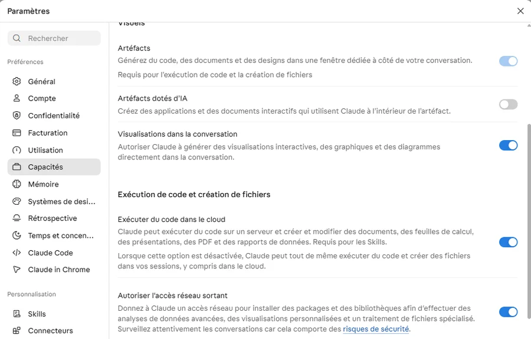
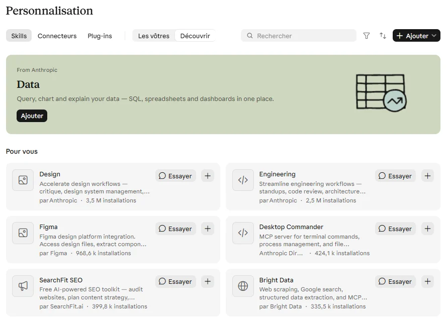
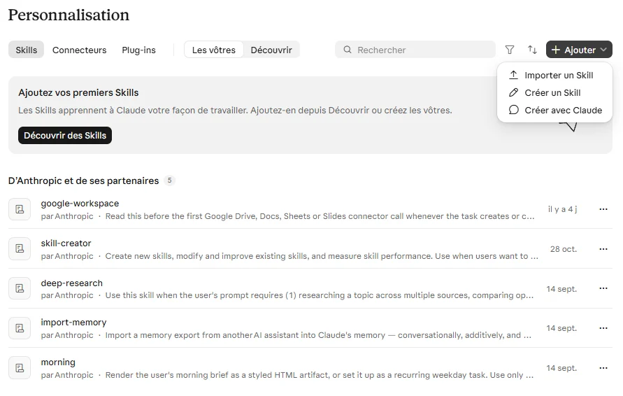
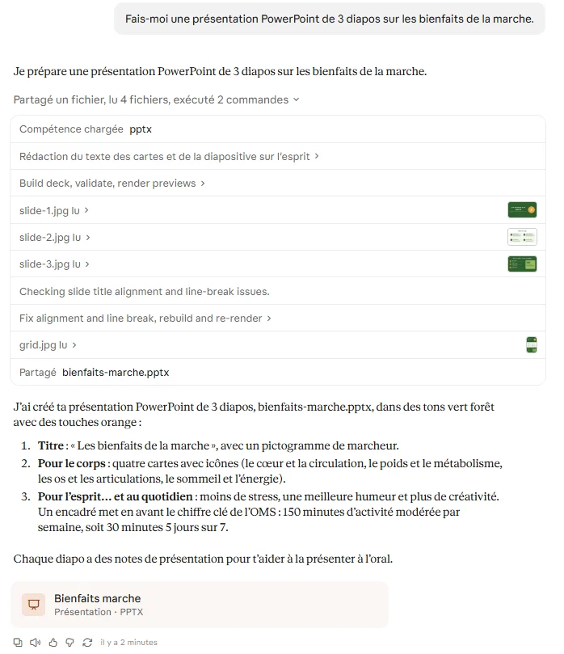
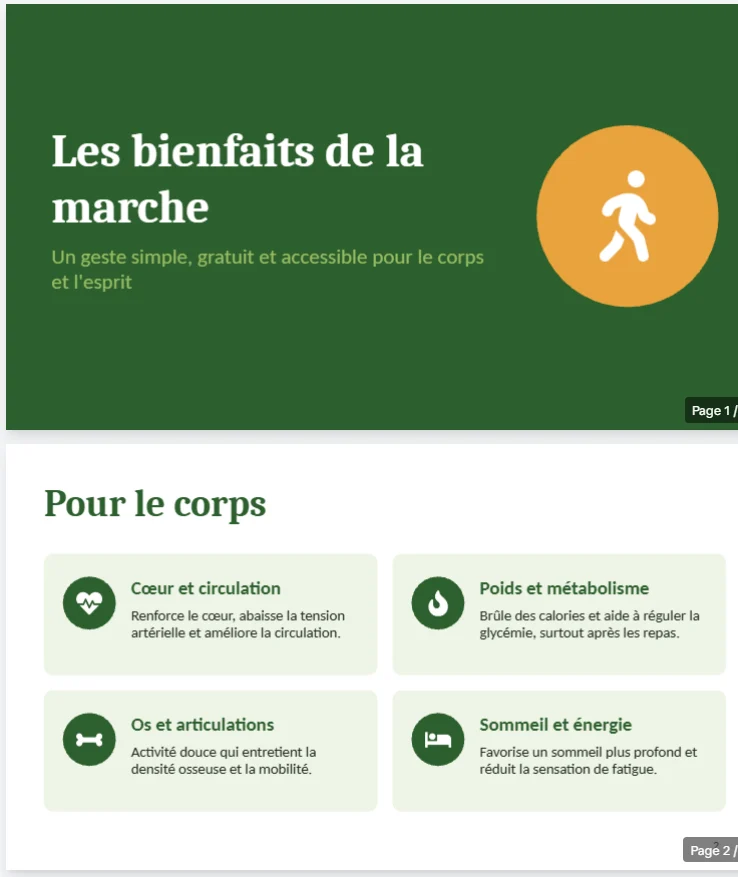

1
Activer l'exécution de code
Paramètres › Capacités › Exécuter du code dans le cloud
À faire une fois. Sans cette option, les skills ne peuvent pas tourner.

Apprends ta façon de travailler à Claude une bonne fois pour toutes : il ouvrira le bon mode d'emploi tout seul.

Une skill, c'est un mode d'emploi rangé dans Claude : des consignes (et parfois des modèles ou des scripts) pour faire une tâche précise à ta façon. Claude garde toutes tes skills de côté, ne lit que leur nom et leur description, et ouvre la bonne tout seul quand ta demande en a besoin.
Toutes tes skills sont dans Personnalisation › Skills : celles d'Anthropic (Word, Excel, PowerPoint, PDF), celles que tu ajoutes et les tiennes.
Tous les forfaitsTu demandes normalement : Claude choisit la skill utile (par ex. pptx pour une présentation). Sinon, nomme-la : « utilise ma skill charte pour… ».
AutomatiqueTu écris ta méthode une fois (ou tu la fais écrire par Claude) : elle sert dans toutes tes conversations, et même dans Claude Code et Claude pour Excel, PowerPoint, Word et Outlook.
Même compteTout se passe dans la barre de gauche de Claude (web et appli de bureau), menu Personnalisation.
À faire une fois. Sans cette option, les skills ne peuvent pas tourner.

Parcours les skills par catégorie, clique Essayer pour la tester ou + pour l'ajouter.

Décris ta méthode à Claude : il écrit la skill pour toi. Tu peux aussi Importer un Skill (un dossier zippé avec son SKILL.md) ou l'écrire toi-même.

Claude charge la skill utile tout seul. Ici, une demande de présentation : « Compétence chargée pptx ».

La présentation sort avec la méthode de la skill PowerPoint (mise en page vérifiée, notes de présentation).

Couleurs, polices et logo de ta marque : toutes tes présentations et tes documents sortent aux bonnes couleurs.
Ton plan habituel (décisions, actions, responsables, échéances) appliqué à chaque réunion que tu colles.
Ton ton, ta signature, tes formules : relances, devis, réponses clients écrits comme toi.
Tes colonnes, tes formules et ton graphique préférés, à chaque export de chiffres.
Les points que tu vérifies toujours (orthographe, chiffres, liens, mentions) passés en revue sans rien oublier.
Le principe des skills se retrouve chez les concurrents, avec des offres et des noms différents.
Bon pour : tout le monde, y compris en gratuit ; catalogue Découvrir et création avec Claude.
Bon pour : les utilisateurs Google ; les Gems des comptes perso deviennent des skills à partir du 17/11/2026, import d'un SKILL.md possible.
Bon pour : les entreprises sur ChatGPT ; pas listé pour Free, Plus et Pro dans l'aide d'OpenAI. Sinon : les Projets.

Chaque vidéo RepoPop Décode t'explique un sujet IA ou tech en moins d'une minute, avec sa fiche complète comme celle-ci.